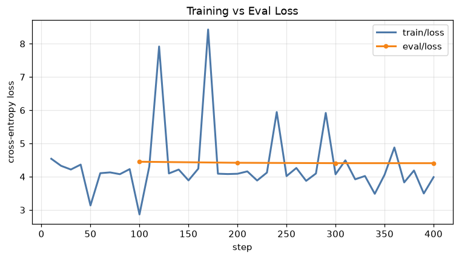
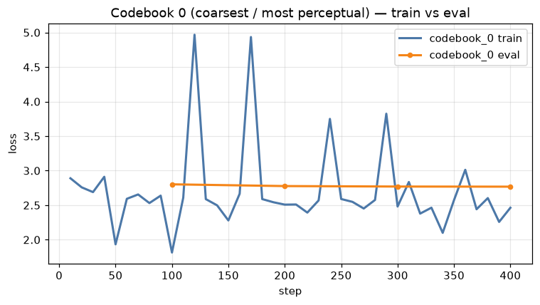
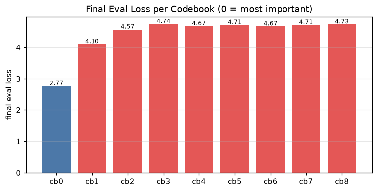
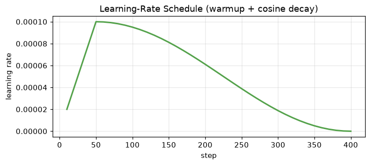
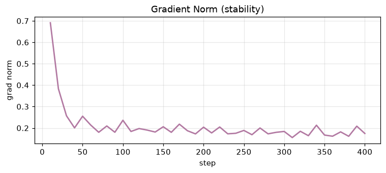

mar-hin-betacraft-ttsA copyright-safe, synthetic-data fine-tune of Indic Parler-TTS for Marathi & Hindi children's-story narration
2026-07-07 · Model v7 of the project · ↗ see the full research report (all versions & trials)
Base: ai4bharat/indic-parler-tts (0.9B) Speakers: Sunita (MR) · Divya (HI) W&B run: true-salad-29 HF (private): roshni-sorigin/mar-hin-betacraft-tts
Earlier project models (v1–v6) were trained on scraped / YouTube narration, which carries
copyright risk for a commercial kids-content product. mar-hin-betacraft-tts replaces that
data with a fully synthetic, copyright-safe corpus: original stories are written by Gemini, then
voiced by Gemini-TTS Pro (voice "Sulafat") to produce clean (audio, text) pairs, on which
we fine-tune the Apache-2.0 Indic Parler-TTS model. Expressiveness transfers through the audio; a
single name-anchored caption selects the voice (Sunita = Marathi, Divya = Hindi). This is a
knowledge-distillation setup: Gemini-Sulafat is the teacher, our Parler model is the student.
| Field | Value |
|---|---|
| Speakers | Sunita = Marathi, Divya = Hindi (chosen by caption name) |
| Source | 100% synthetic — Gemini-TTS Pro, voice Sulafat (24 kHz mono); transcript = exact input text → perfect alignment |
| Composition | Sunita 1,770 clips (5.21 h) + Divya 1,510 clips (3.29 h) |
| Split | train 3,213 / test 67 (2% per-speaker then merged → test covers both voices), 8.51 h |
| Caption (byte-identical train↔inference) | "{name} narrates a children's story in an expressive, warm, animated storytelling tone with emotional variation, at a moderate pace. Very clear audio with no background noise." |
Training is a manual accelerate loop over DAC audio-codec tokens (cross-entropy objective;
no mel-spectrogram or GAN loss — those belong to other TTS architectures).
Why the RTX A5000 (24 GB): the config is bf16 and sized for 24 GB (effective batch 32 = batch 4 ×
grad-accum 8). We deliberately avoided 16 GB cards and T4/V100 (no native bf16 → OOM). The A5000 was
chosen over an equivalent L4 because it is cheaper ($0.27 vs $0.39/hr) and is exactly what the
recipe was tuned on. Recipe: 4 epochs · lr 1e-4 cosine · warmup 50 · bf16 · frozen Flan-T5 text encoder ·
save_steps 100000 (no mid-run checkpoints — avoids the transient 2× disk spike that crashed
earlier runs; the final model auto-saves once at the end).
true-salad-29)




The WER logged inside W&B uses an English Whisper model that mis-scores Devanagari, so we computed the trustworthy numbers offline: WER/CER via Sarvam Saaras STT (Indic-native), and reference-free SQUIM (STOI/PESQ/SI-SDR) + UTMOS (predicted MOS).
| Audio | Sarvam WER↓ | CER↓ | STOI↑ | PESQ↑ | SI-SDR↑ | UTMOS↑ |
|---|---|---|---|---|---|---|
| Gemini-Sulafat (teacher / ceiling) | 4.5% | 0.4% | 0.992 | 3.79 | 25.0 | 3.08 |
| betacraft — kawda, temp 1 (default) | 3.0% | 0.8% | 0.989 | 3.55 | 22.9 | 1.61 |
| betacraft — kawda, temp 0.7 seed 42 | 2.6% | 0.8% | 0.995 | 3.86 | 26.9 | 2.1 |
| betacraft — Hindi, temp 1 | 20.0% | 7.8% | 0.986 | 3.68 | 22.9 | 2.14 |
UTMOS is English-calibrated, so absolute values run low for Indic/ synthetic speech — read it relatively. WER/CER against the known input script is the primary intelligibility metric. Marathi (2.6%) is far cleaner than Hindi (20%) — see Limitations.
Parler generates each sentence independently with no persistent speaker vector, so timbre can drift across a story. We quantify it with speaker-embedding cosine consistency (Resemblyzer): windowed voiceprints within one story, averaged pairwise — higher = steadier voice. The Gemini teacher is the stable ceiling; min-cos (the worst-matching pair) is the sharpest drift signal.
| Voice | mean-cos↑ | min-cos↑ | Read |
|---|---|---|---|
| Gemini-Sulafat teacher | 0.758 | 0.597 | stable ceiling |
| betacraft — temp 0.7 | 0.738 | 0.464 | some drift — the #1 open problem |
| betacraft — temp 1 | 0.72 | 0.452 | slightly worse than 0.7 |
| betacraft — Hindi | 0.722 | 0.498 | similar drift |
temp 0.7 is measurably steadier than temp 1 (0.738 vs 0.72), and its worst-case pairs never fall as far. Decoding can only nudge this — the drift is architectural; the full research report covers the voice-conversion route that reaches teacher-level consistency.
Some sentences ended in a buzzy hiss (a sharp tail, ~95% of its energy above 4 kHz). Adjusting the sampling seed and lowering the temperature (1.0 → 0.7), together with a 120 ms trailing fade, removes it. Listen — the same final sentence, before vs after the fix:
Temperature 0.7 also wins on overall signal quality, at no intelligibility cost — and going lower backfires (the model stops emitting a clean end-of-speech token → the buzz returns):
| Setting | WER↓ | PESQ↑ | SI-SDR↑ | UTMOS↑ | Verdict |
|---|---|---|---|---|---|
| temp 1.0 (default) | 3.0% | 3.55 | 22.9 | 1.61 | buzz-prone |
| temp 0.7 seed 42 (chosen) | 2.6% | 3.86 | 26.9 | 2.1 | chosen |
| temp 0.5 | — | 3.41 | 19.8 | 2.21 | tails return, slower |
| temp 0.3 | — | 2.03 | 1.2 | 2.82 | heavy buzz (PESQ 2.03, SI-SDR 1.2) |
| Graph / term | Meaning |
|---|---|
| train/loss, eval/loss | How wrong the model's audio-token predictions are on training vs held-out clips. Falls then flattens = learning; eval turning up = overfitting. |
| codebook 0–8 | The codec stores 1 s of audio as 9 stacked token layers. Codebook 0 = coarsest & most audible (watch it most); higher = fine detail. |
| CLAP | Text↔audio alignment (0–1, higher = better) — a semantic "does the audio match the words/style" proxy. |
| WER / CER | Word / character error rate vs the known script (lower = clearer). Our "accuracy" number — the TTS analog of mAP in detection. |
| UTMOS / SQUIM | Predicted human naturalness (UTMOS 1–5) and signal quality (STOI/PESQ/SI-SDR). Reference-free. |